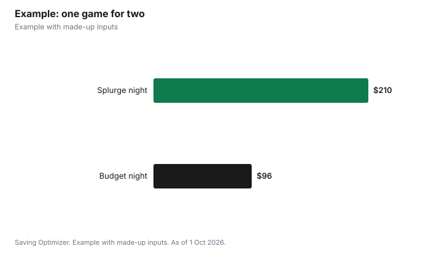

Sports · Canada
Cheap Blue Jays Tickets in 2027: How to Pay Less at Rogers Centre

The cheapest way to see the Toronto Blue Jays in 2027 is to choose a weeknight game against a less popular opponent, buy the lowest-priced seats when single-game tickets are released or on the official SeatGeek resale market, bring your own food under the Rogers Centre rules, and take transit instead of paying for downtown parking. MLB's 2027 schedule puts Opening Day on Thursday, 25 March, the earliest ever, and the regular season is scheduled to end on Sunday, 26 September. As of 1 October 2026, the Blue Jays' ticket page lists 2027 memberships and group tickets, but not single-game tickets yet.
Key takeaways
- 2027 Opening Day: Thursday 25 March; regular season scheduled to end Sunday 26 September (MLB).
- Single-game 2027 tickets were not listed yet as of 1 Oct 2026.
- Quarter-season memberships and groups of 12 or more are listed now.
- Ontario caps resale at the original total price plus taxes and platform fees.
- Outside food is allowed if wrapped, bagged or in a container; no outside alcohol.
- Example with made-up inputs: two fans spend $96 on a Tuesday game.
The 2027 season at a glance
MLB released its 2027 schedule on 16 July 2026. It lists Opening Night on Wednesday, 24 March 2027, a traditional Opening Day with all teams on Thursday, 25 March, and a regular season scheduled to end on Sunday, 26 September. Check the Blue Jays' own schedule for home dates; early home games, weekday afternoons and games in the middle of a long homestand are often less in demand than weekends, giveaway days and marquee opponents.
| Date | What |
|---|---|
| 16 July 2026 | 2027 schedule announced |
| Wednesday 24 March 2027 | Opening Night |
| Thursday 25 March 2027 | Opening Day for all teams (earliest ever) |
| Sunday 26 September 2027 | Regular season scheduled to end |
Ticket options on the official page
The Blue Jays ticket page lists season memberships and quarter-season memberships for 2027, group tickets for parties of 12 or more, and spring training in Dunedin, Florida. Single-game tickets for 2027 were not listed as of 1 October 2026; sign up for the team's emails to hear when they are released. The team names SeatGeek as its resale partner.
| Option | Who it suits | Watch out for |
|---|---|---|
| Single-game tickets | Fans going to one to three games | Not on sale yet for 2027 |
| Quarter-season membership | Fans who will go to many games | Upfront cost; check how many games are included |
| Full-season membership | Regulars | Biggest commitment |
| Group tickets (12+) | Work outings, teams, families | Need a group organizer |
| SeatGeek resale | Late buyers and sold-out games | Fees; compare the all-in price |
Resale: the Ontario price cap
Ontario's Ticket Sales Act sets rules for reselling tickets. The province says a resale price cannot be more than the original total price, which includes the base price, fees, service charges and taxes, plus applicable taxes and the resale platform's standard fees. Resale listings must show the original total, itemized fees and the resale total. Buyers must get either written validation from the original seller or a written money-back guarantee, including a refund if the event is cancelled before the ticket can be used. For low-demand games, resale prices can fall below face value, so compare the all-in total on SeatGeek with the team's own price before buying.
Food and bags at Rogers Centre
Concessions add up fast, and Rogers Centre lets you bring your own food. Its Know Before You Go page says outside food is allowed if it is wrapped, bagged or in a container, and containers must be soft-sided and fit under your seat. You can bring plastic bottles or cans of non-alcoholic drinks of 600 ml or less. Outside alcohol, glass bottles and metal bottles are not allowed. Bags must be smaller than 16 by 16 by 8 inches.
| Item | Allowed? |
|---|---|
| Wrapped or bagged outside food | Yes |
| Soft-sided container that fits under the seat | Yes |
| Non-alcoholic drink in plastic bottle or can, 600 ml or less | Yes |
| Outside alcohol | No |
| Glass or metal bottles | No |
| Bags 16 x 16 x 8 inches or larger | No |
Getting there
Rogers Centre says the stadium can be reached on foot, by car, by bike, or by public transit including the TTC, GO Train, VIA Rail and UP Express. For drivers, it points to independently owned parking facilities within walking distance and advance booking through SpotHero. The TTC adult fare is $3.30, so a return trip for one person is $6.60. Before you book parking, compare its price with transit fares for everyone in your group; for one or two people, transit usually wins, while a carload of four travelling from outside the city may find driving competitive. If you are coming from the suburbs, check whether a GO fare plus a short walk beats gas and parking. Cycling is another option, and a free ride if you have a bike and a good lock.
Family days
In 2026 the team ran Jr. Jays Sundays from 7 June to 30 August, with an outdoor zone opening at 10:30 a.m. If the program returns in 2027, Sunday games can be a good-value outing for families. Check the team's promotions page once the 2027 calendar is published.
Example with made-up inputs
These numbers are an example with made-up inputs. Two fans buy upper-level seats for a Tuesday night game for $32 each, all-in, on resale where the price has dropped below the original. They pack sandwiches and two 591 ml plastic bottles of water, and buy one $13 snack at the park to share. They take the TTC both ways for four fares of $3.30, or $13.20. The total is about $96. The same night with $60 tickets, $50 of concessions and $40 parking would be $210.
| Item | Budget night | Splurge night |
|---|---|---|
| Two tickets | $64 | $120 |
| Food and drinks | $13 (plus packed food) | $50 |
| Getting there | $13.20 (TTC) | $40 parking |
| Total | About $96 | $210 |

Steps
- Sign up for Blue Jays emails to hear when single-game 2027 tickets go on sale.
- Pick weeknight games and less popular opponents.
- Compare the team's price with SeatGeek resale, all-in.
- Check the original total on resale listings; Ontario caps the resale price.
- Pack food and drinks that follow the Rogers Centre rules.
- Compare transit fares with parking before you go.
Common mistakes
- Buying from an unofficial site without a money-back guarantee.
- Comparing prices before fees instead of the all-in total.
- Bringing a hard cooler or glass bottle that gets turned away.
- Paying for parking without comparing it with transit fares for your group.
More: cheaper NHL tickets and avoiding resale scams.
Sources
- MLB, 2027 schedule announcement (16 July 2026), mlb.com, as of 1 Oct 2026.
- Toronto Blue Jays, Tickets, mlb.com/bluejays/tickets, as of 1 Oct 2026.
- Rogers Centre, Know Before You Go, as of 1 Oct 2026.
- Government of Ontario, Buying tickets to events in Ontario, ontario.ca, as of 1 Oct 2026.
- Toronto Transit Commission, Fares, ttc.ca, as of 1 Oct 2026.
- Ticket, food and parking prices in the example are made-up inputs.
Frequently asked questions
When does the 2027 Blue Jays season start?
MLB's 2027 schedule has Opening Day for all teams on Thursday 25 March 2027, with Opening Night on Wednesday 24 March.
When do Blue Jays single-game tickets go on sale for 2027?
They were not listed as of 1 October 2026. Sign up for team emails to hear when they are released.
Can you bring food into Rogers Centre?
Yes, if it is wrapped, bagged or in a container. Containers must be soft-sided and fit under your seat.
Can you bring water into Rogers Centre?
Yes, non-alcoholic drinks in plastic bottles or cans of 600 ml or less.
Is there a cap on resale prices in Ontario?
Yes. Resale cannot exceed the original total price plus applicable taxes and the resale platform's standard fees.
What is the cheapest way to get to a Jays game?
For most small groups, transit. Rogers Centre is served by the TTC, GO Train, VIA Rail and UP Express, and the TTC adult fare is $3.30.
Researched and drafted with AI assistance and fact-checked against official Canadian sources. How we create content.
Disclosure: Saving Optimizer may earn a commission if a partner link is added later, such as a ticket marketplace offer type. No partnership is claimed on this page. Education only.